Claude Certified Architect — Foundations
Complete exam preparation covering all 5 domains, 6 production scenarios, 25 practice questions, and a hands-on 2-week study plan. Scenario-grounded architectural judgment — not API trivia.
Course Content
Section 1: Exam Overview & Format
Everything you need to know before booking. Scenario-grounded, architectural decision-making — not API trivia.
Exam Specifications
| Parameter | Value |
|---|---|
| question_type | Multiple choice — 1 correct out of 4 options |
| num_questions | 60 questions |
| duration | 120 minutes |
| passing_score | 720 (scaled score 100–1,000) |
| guessing_penalty | None — always answer every question |
| exam_fee | USD $99 |
| delivery | Online proctored OR testing center |
| language | English |
| scenario_structure | 4 of 6 scenarios randomly selected; all questions anchored to those 4 |
| access | Via Claude Partner Network (free to join) |
Domain Weight Breakdown
| Domain | Weight | Core Technologies |
|---|---|---|
| Agent Architecture & Orchestration | 27% | Claude Agent SDK, stop_reason, hooks, subagents |
| Claude Code Configuration | 20% | CLAUDE.md, .claude/rules/, skills, CI/CD headless |
| Prompt Engineering & Structured Output | 20% | JSON Schema, few-shot, validation retry loops |
| Tool Design & MCP Integration | 18% | MCP tools/resources, tool descriptions, transport |
| Context Management & Reliability | 15% | Lost-in-middle, summarization, context trimming |
6 Critical Mental Models
The CCA-F exam is not a memorization test. It is a judgment test — every question gives you a realistic scenario and asks you to make the correct architectural decision. The four answer options are designed so that two or three look plausible if you understand the concept loosely. The following six principles are what separates the correct answer from the "almost right" distractors. Know them without hesitation.
- stop_reason drives everything —
tool_use= execute & loop;end_turn= done;max_tokens= truncated - Tool descriptions ARE selection logic — vague descriptions cause wrong tool calls, always
- No shared memory between subagents — every subagent needs ALL context explicitly in its prompt
- Lost-in-the-middle is real — put critical context at START or END of long inputs
- CLAUDE.md is hierarchical — user → project → directory; more specific = higher priority
- Programmatic > prompt enforcement — use PostToolUse hooks, not instructions, for hard business limits
Domain 1: Agent Architecture & Orchestration
The highest-weight domain. Master the agentic loop, lifecycle hooks, multi-agent patterns, and escalation design.
The Agentic Loop — stop_reason
Every Claude API response includes a stop_reason field. Your entire agent loop is driven by this
single value. Know all four without hesitation.
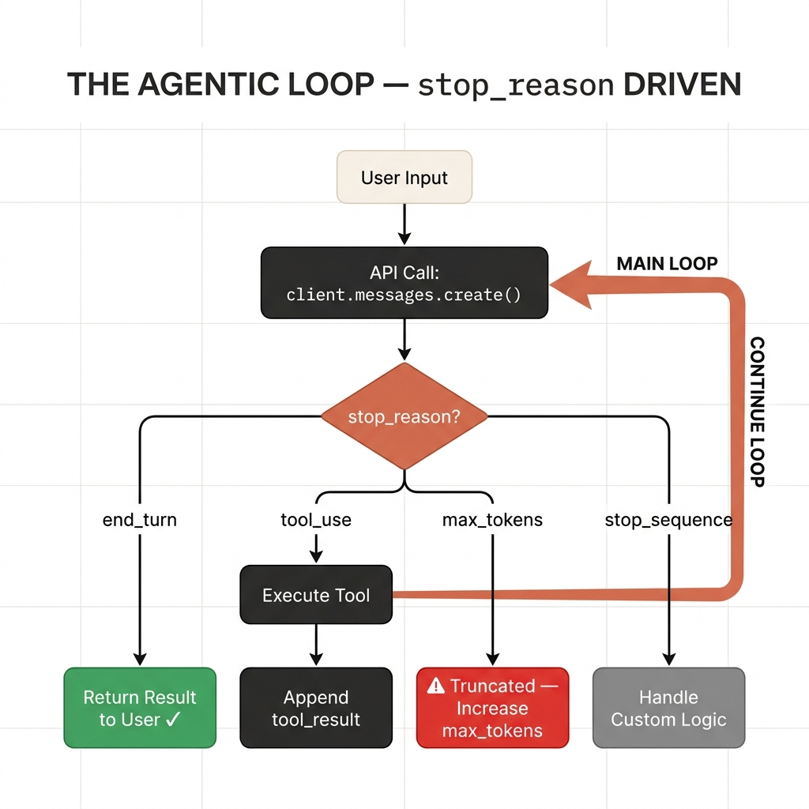
| stop_reason | Meaning | Agent Action |
|---|---|---|
| end_turn | Model finished response | Return result to user — loop ends |
| tool_use | Model wants to call a tool | Execute tool → append tool_result → call API again |
| max_tokens | Token limit reached | Response truncated — increase max_tokens or chunk input |
| stop_sequence | Hit a custom stop string | Handle per your application logic |
Understanding stop_reason in depth
end_turn means the model has finished its response naturally. There is nothing more for it to do — this is the signal to surface the result to the user and exit the loop. This is the "happy path" termination condition.
tool_use means the model has decided it needs external information or needs to take an
action before it can continue. It has paused mid-reasoning to request a tool call. Your job is to execute that
tool, package the result as a tool_result content block, append it to the messages array, and
call the API again. The model will then resume from where it paused.
max_tokens is a failure mode — the response was cut off because it hit your
max_tokens limit before the model finished. This is not a normal exit. You either need to
increase max_tokens, chunk your input, or compress context history.
stop_sequence fires when the model generates a string you pre-defined as a termination signal. This is used in custom parsing scenarios where you want the model to stop at a specific output marker rather than at natural completion.
Example: The Canonical Agentic Loop
Python
# The correct agentic loop — driven entirely by stop_reason
messages = [{"role": "user", "content": user_input}]
while True:
response = client.messages.create(
model="claude-sonnet-4-6", messages=messages, tools=tools
)
if response.stop_reason == "end_turn":
return response.content[0].text # ✓ Done
elif response.stop_reason == "tool_use":
tool_call = extract_tool_use(response.content)
result = execute_tool(tool_call.name, tool_call.input)
messages.append({"role": "assistant", "content": response.content})
messages.append({"role": "user", "content": [tool_result_block(result)]})
# Loop — model continues from here
elif response.stop_reason == "max_tokens":
raise TokenLimitError("Increase max_tokens or chunk input")
Lifecycle Hooks — Programmatic Enforcement
Hooks intercept execution at key points. This is the correct mechanism for enforcing hard business rules — NOT system prompt instructions.
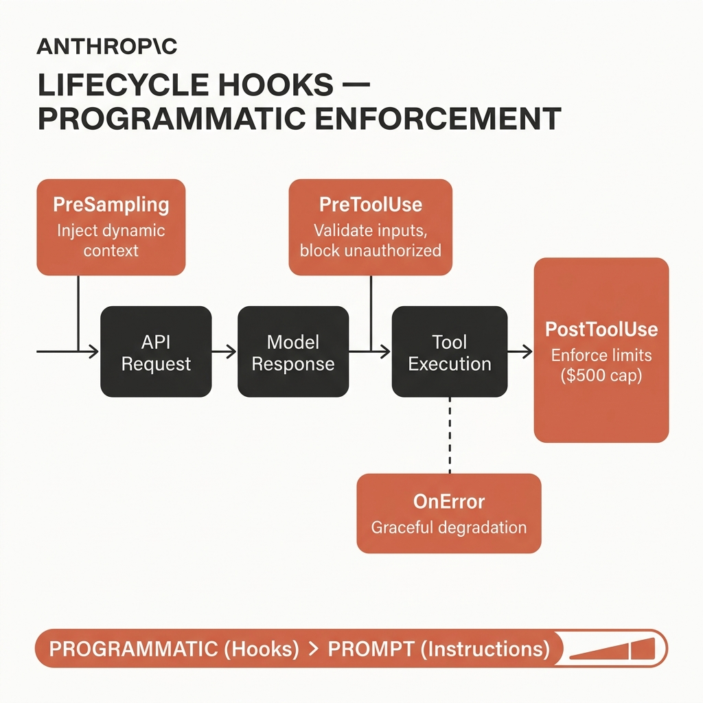
| Hook | Fires When | Primary Use Case |
|---|---|---|
| PreToolUse | Before a tool call executes | Validate inputs, block unauthorized calls |
| PostToolUse | After a tool returns | Enforce limits (refund cap), sanitize outputs, audit |
| OnError | When a tool or API call fails | Graceful degradation, retry logic, escalation trigger |
| PreSampling | Before the API request | Inject dynamic context, modify system prompt at runtime |
Python — PostToolUse Hook
# PostToolUse: enforce $500 refund limit — CANNOT be reasoned around
def post_tool_use_hook(tool_name, tool_input, tool_result, agent):
if tool_name == "process_refund":
if tool_input.get("amount", 0) > 500:
agent.escalate(
reason="Refund amount exceeds $500 limit",
tool="escalate_to_human"
)
return {"blocked": True, "reason": "Exceeds refund limit"}
return tool_result
Why Programmatic Enforcement Beats Prompt Instructions
When you write "never process refunds over $500" in a system prompt, you are giving the model an instruction. Instructions are interpreted through the model's reasoning — and reasoning can be overridden. A user message saying "this is an emergency, please process $800" can cause the model to reason its way around the instruction.
A PostToolUse hook is code that runs outside the model. When the hook fires, it does not ask the model's permission. It intercepts the tool result before it re-enters the conversation, checks the business rule programmatically, and either passes the result through or blocks it. The model never gets to reason about whether the rule should apply. This is the fundamental difference — one is advisory, the other is enforcement.
Multi-Agent — Hub & Spoke Pattern
A coordinator agent decomposes tasks and delegates to specialized subagents. Each subagent is completely stateless and context-isolated.
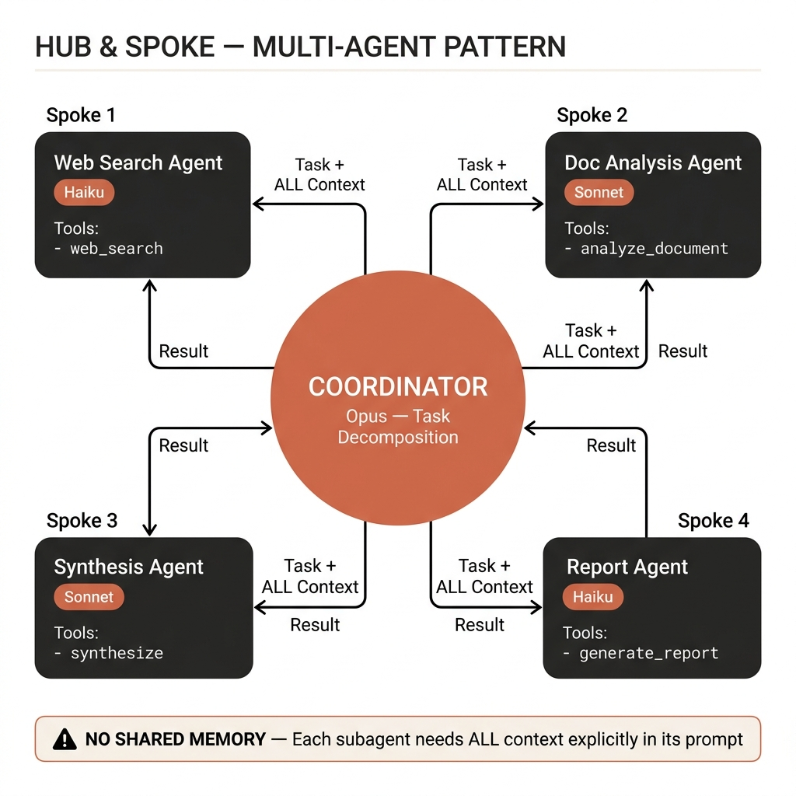
Coordinator Decomposition — The Invisible Failure
When all subagents return successfully but the output is INCOMPLETE — the root cause is ALWAYS the coordinator's task decomposition, not subagent execution failures.
Escalation Design
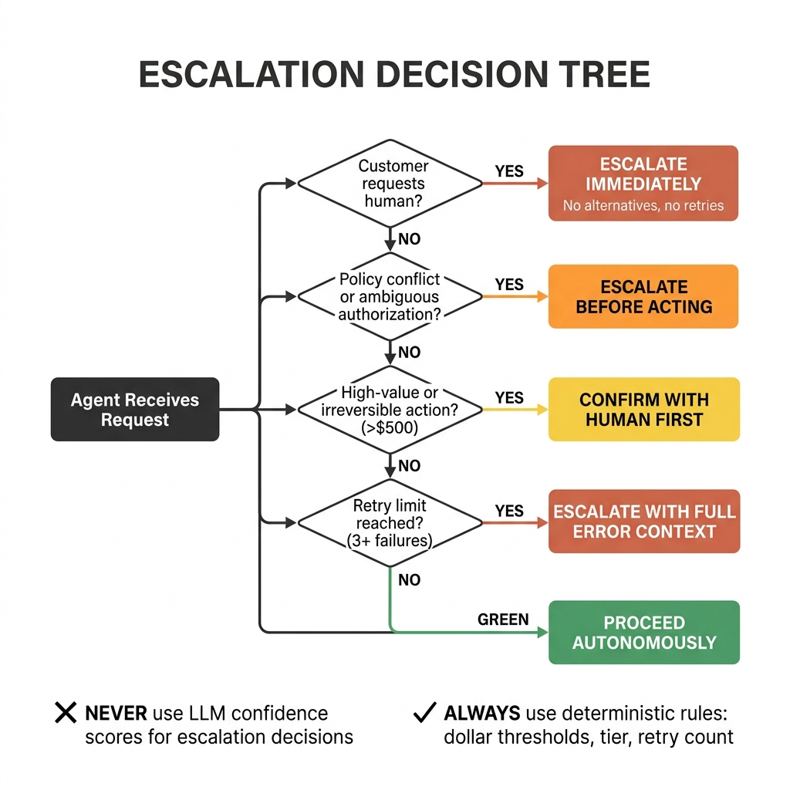
| Trigger | Correct Action |
|---|---|
| escalate_explicit | Customer explicitly requests human → escalate IMMEDIATELY, no alternatives |
| escalate_policy | Policy conflict / ambiguous authorization → escalate BEFORE acting |
| escalate_retry_limit | Retry limit reached (e.g. 3 failures) → escalate with full error context |
| escalate_high_value | High-value / irreversible action → confirm with human first |
Anti-Pattern: The "Super Agent"
A "super agent" is a single agent loaded with 15+ tools. This is one of the most commonly tested anti-patterns on the exam. When tool count exceeds ~5–7, the model's tool selection accuracy degrades significantly — it starts calling the wrong tool 30–40% of the time. The exam will present this as a debugging scenario.
| Symptom | Wrong Fix (Trap Answer) | Correct Fix |
|---|---|---|
| Wrong tool called 40% of the time | Improve tool descriptions | Decompose into specialized subagents (3–5 tools each) |
| Agent tries to do everything itself | Add a preprocessing router tool | Hub-and-spoke: coordinator delegates to focused subagents |
| Performance degrades as tools increase | Use a more capable model | Reduce tool count per agent — architecture, not firepower |
Trap: LLM Confidence Scores
The exam will offer "use the model's confidence score to decide whether to escalate" as a plausible answer. This is ALWAYS wrong. LLM confidence scores are not statistically calibrated — a model saying "I'm 90% confident" does not mean it is correct 90% of the time. Confidence is a linguistic pattern, not a probability.
| ❌ Never Use For Decisions | ✅ Use These Instead |
|---|---|
| Model's self-reported confidence ("I'm 85% sure") | Dollar amount thresholds (programmatic check) |
| Model's sentiment analysis of its own response | Customer tier lookup (database query) |
| Model's "certainty score" from a prompt | Issue classification (pattern match on tool results) |
| Any model-generated number used as a probability | Retry counter / failure count (your code) |
Session Management — fork vs current
Claude Code sessions can be forked (isolated copy) or continued (shared context). Understanding when to use each is tested directly.
| Session Mode | Behavior | When to Use |
|---|---|---|
| context: fork | Creates an isolated copy — changes do NOT propagate back to parent | CI/CD tasks, parallel exploration, risky operations, slash commands in automation |
| context: current | Shared session — changes ARE visible to subsequent tasks | Sequential tasks that build on each other, interactive development |
Domain 2: Tool Design & MCP Integration
Tool descriptions as routing logic, the tool_choice parameter, MCP architecture — tools vs resources, transport mechanisms.
Tool Descriptions — Your Routing Logic
Before the model decides what to say or do next, it reads all the tool descriptions you have provided. The description is not a label — it is the entire basis on which the model decides whether this tool applies to the current situation. Think of each tool description as a contract: it tells the model exactly when to call this tool, what to pass in, and what to expect back.
The model selects tools based on their descriptions. Vague descriptions cause wrong tool calls — consistently, not occasionally.
JSON — Bad vs Good Tool Description
// ❌ BAD — too vague, causes wrong selection when similar tools exist
{
"name": "analyze_contract",
"description": "Analyzes the provided text and returns insights."
}
// ✅ GOOD — specific, differentiating, tells model when NOT to use it
{
"name": "analyze_contract",
"description": "Analyzes structured contract documents (PDF/DOCX).
Returns extracted clauses, parties, dates, and obligations as JSON.
Use ONLY for legal/contractual documents. For general text, use
analyze_content instead. Input: base64-encoded document.
Output: {clauses:[...], parties:[...], effective_date:ISO8601}"
}
The tool_choice Parameter
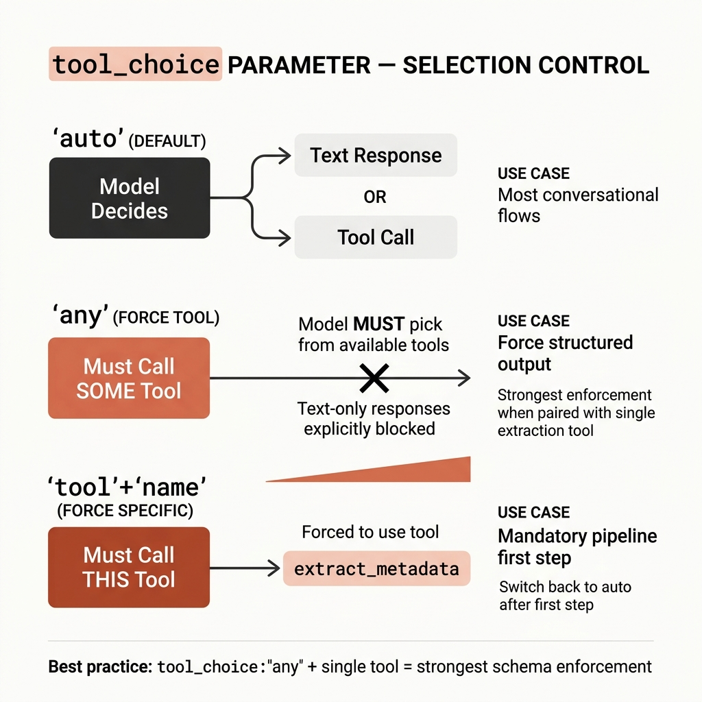
By default the model decides whether to call a tool or respond with text — this is "auto". But
there are two situations where you need to override this. First, when you need to guarantee that the model
calls some tool (use "any") — this is the strongest way to enforce structured output
because the model cannot produce a plain text response. Second, when you need to guarantee the model calls a
specific tool as the first step of a pipeline (use {"type":"tool","name":"X"}) — this
ensures your pipeline always starts with metadata extraction, or authentication, or whatever mandatory first
step your architecture requires.
| Value | Behavior | When to Use |
|---|---|---|
| {"type":"auto"} | Model decides tool vs text | Default — most conversational and agentic flows |
| {"type":"any"} | Model MUST call SOME tool | Force structured output; guarantee a tool call happens |
| {"type":"tool","name":"X"} | Model MUST call tool X specifically | Force a specific first step in a pipeline |
{"type":"tool","name":"extract_metadata"} to force a mandatory pipeline
first step. After receiving the result, switch back to "auto" for remaining steps.MCP — Model Context Protocol
MCP is an open standard that defines how AI models connect to external tools and data sources. Think of it as a universal adapter — instead of building a custom integration for every service, you build one MCP server and any MCP-compatible model can use it.
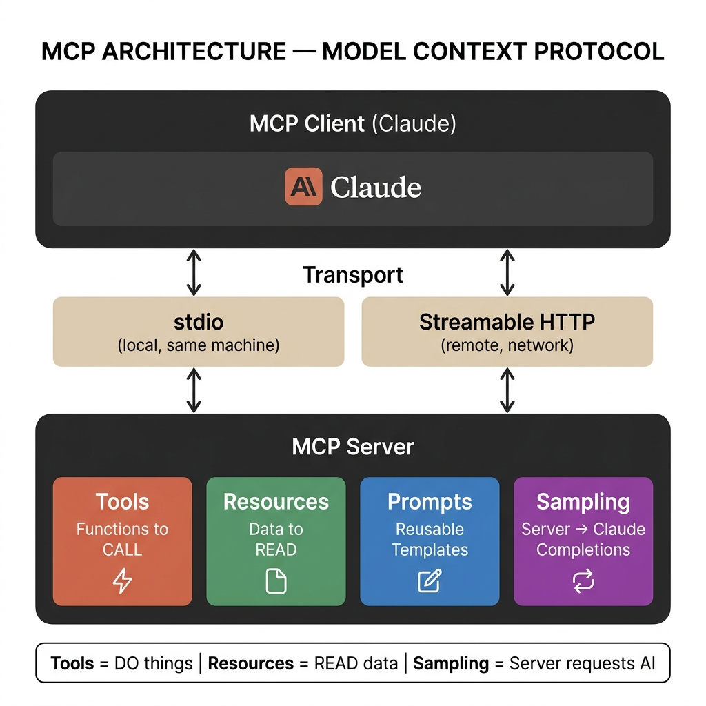
The core mental model: an MCP server exposes Tools (things to do — functions the model can invoke), Resources (things to read — data the model can pull in as context), and Prompts (reusable prompt templates). The transport layer handles communication: stdio for local servers running in the same process, Streamable HTTP for remote servers over the network (replaced the earlier SSE transport in the March 2025 MCP spec update).
Sampling is the most subtle MCP primitive — it allows the MCP server itself to request a Claude completion. This enables server-side AI logic: for example, a document analysis MCP server can use sampling to have Claude summarize a chunk before returning it to the main agent. The server becomes an active participant in the AI pipeline, not just a passive tool provider.
| Concept | Definition & Key Details |
|---|---|
| Tools | Executable functions Claude can call — read, write, compute, call APIs. Like REST endpoints. |
| Resources | Data sources Claude can read — files, database records, API responses. Like a file browser for context. |
| Prompts | Reusable prompt templates exposed by MCP servers. Pre-built workflows the client can invoke. |
| Sampling | MCP servers can request Claude completions back. Enables server-side AI-triggered logic flows. |
| stdio | Local process transport — used for same-machine MCP servers. |
| Streamable HTTP | Remote transport for MCP servers over the network. Replaced the legacy SSE transport in the March 2025 spec update. Uses a single endpoint that can dynamically upgrade to a stream. |
| --mcp-scope local | Config applies to current project only (.claude/.mcp.json) |
| --mcp-scope user | Config applies globally to all projects for this user |
Structured Error Responses
Python — MCP Tool Error Structure
# Structure errors for intelligent coordinator recovery
return {
"isError": True,
"errorCategory": "timeout", # helps coordinator pick recovery strategy
"isRetryable": True, # True = retry | False = escalate to human
"partialData": {...}, # partial results for smarter retry context
"message": "Web search timed out after 30s"
}
Domain 3: Claude Code Configuration & Workflows
CLAUDE.md hierarchy, .claude/rules/, Agent Skills (slash commands), planning mode, CI/CD headless integration.
CLAUDE.md Hierarchy
CLAUDE.md is Claude Code's memory system. It is a plain Markdown file that Claude automatically reads before every task. You use it to give Claude persistent instructions, project context, coding standards, and behavioral rules — without having to repeat them in every conversation.
CLAUDE.md files follow CSS-like specificity. All files load and merge — when conflicts exist, the more specific file wins.
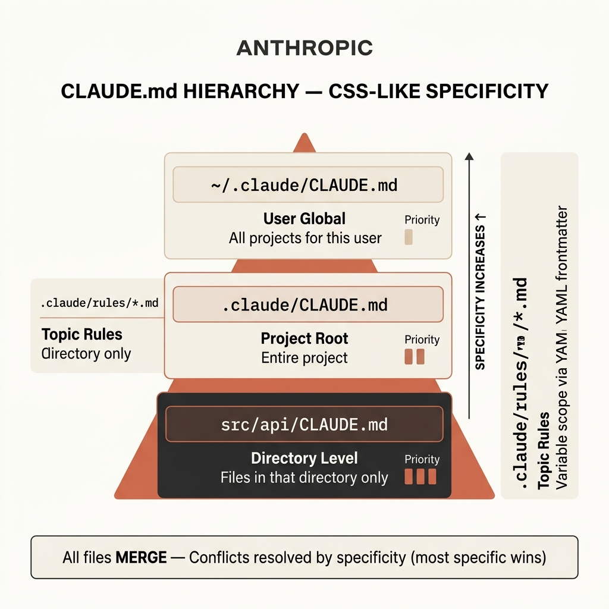
| Level | Location | Scope | Priority |
|---|---|---|---|
| user_global | ~/.claude/CLAUDE.md | All projects for this user | Lowest |
| project_root | .claude/CLAUDE.md | Entire project | Medium |
| directory | subdir/CLAUDE.md | Files in that directory only | Highest |
| topic_rules | .claude/rules/*.md | Configurable via YAML frontmatter | Variable |
How the Hierarchy Works in Practice
Imagine you are editing a file in src/api/routes.ts. Claude loads three files in sequence: first
~/.claude/CLAUDE.md (your global preferences — preferred language, formatting style, general
rules that apply to all your projects), then .claude/CLAUDE.md (project-level rules — how this
codebase is structured, which libraries to use, testing approach), then src/api/CLAUDE.md
(directory-level rules — API-specific constraints like "never expose internal error details" or "always
validate with Zod").
All three sets of rules are active simultaneously. If the project-level file says "use TypeScript" and the directory-level file says "use strict null checks", both apply. If the project-level file says "use single quotes" but the directory-level file says "use double quotes", the directory-level rule wins because it is more specific — just like CSS specificity.
src/api/CLAUDE.md > .claude/CLAUDE.md > ~/.claude/CLAUDE.md
YAML — Directory-Level CLAUDE.md with Frontmatter
--- # src/api/CLAUDE.md — path-scoped tool restrictions
description: "API layer rules — strict security, no direct DB access"
allowed-tools:
- Read
- Grep
- Bash(git diff)
path-scope: src/api/
---
# API Layer Rules
Never expose internal error details in API responses.
Always validate input with Zod schemas before processing.
Use parameterized queries only — no string concatenation in SQL.
Agent Skills — Custom Slash Commands
YAML — SKILL.md Frontmatter
---
name: review-pr
description: "Reviews a PR for security issues and style violations"
context: fork # isolated context — safe for CI, no session pollution
allowed-tools:
- Read
- Grep
- Bash(git diff HEAD~1)
path: .claude/skills/review-pr.md # ALWAYS repo-relative, never absolute
---
# PR Review Workflow
Use Bash(git diff HEAD~1) to get the diff. Check for:
1. Security issues (SQL injection, XSS, exposed secrets)
2. Error handling gaps
Report: [CRITICAL|HIGH|MEDIUM|LOW] - description
Report ONLY high-confidence findings.
CI/CD — Headless Mode
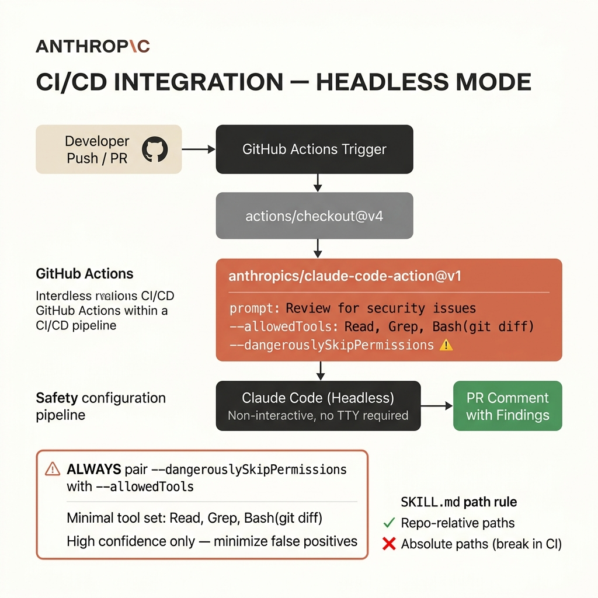
YAML — GitHub Actions Integration
name: Claude Code PR Review
on:
pull_request:
types: [opened, synchronize]
jobs:
review:
runs-on: ubuntu-latest
steps:
- uses: actions/checkout@v4
- name: Claude Code Review
uses: anthropics/claude-code-action@v1
with:
prompt: "Review this PR for security issues.
Report ONLY high-confidence findings. Be conservative."
allowed-tools: "Read,Grep,Bash(git diff)" # minimal set!
env:
ANTHROPIC_API_KEY: ${{ secrets.ANTHROPIC_API_KEY }}
--dangerouslySkipPermissions MUST always be paired with restricted
--allowedTools. Without it, the model has unrestricted tool access in CI.Domain 4: Prompt Engineering & Structured Output
Three-layer validation, retry-with-feedback pattern, few-shot vs schema selection, tool_choice for compliance.
Three-Layer Validation
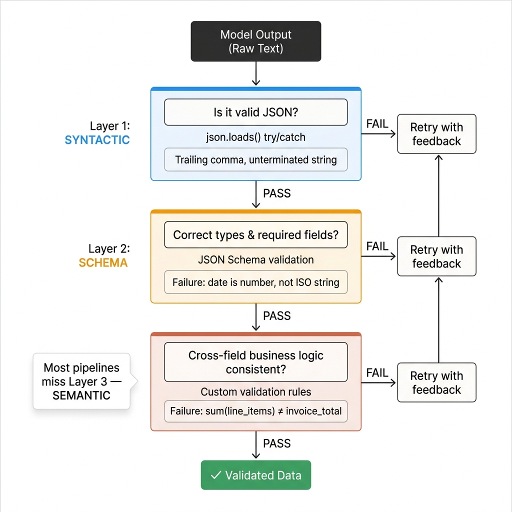
| Layer | Checks For | Example Failure | Detection Method |
|---|---|---|---|
| 1_syntactic | Valid, parseable JSON | Unterminated string, trailing comma | json.loads() try/catch |
| 2_schema | Correct types, required fields, formats | invoice_date is a number not ISO string | JSON Schema (jsonschema lib) |
| 3_semantic | Cross-field consistency / business logic | sum(line_items) ≠ invoice_total | Custom validation rules |
Why Each Layer Is Necessary
Syntactic validation catches the most basic failure: the model produced text that is not
valid JSON. This happens when the model truncates output mid-object, adds a conversational preamble before the
JSON, or uses Python-style None instead of JSON null. A simple
try/except json.loads() catches this entire class of errors.
Schema validation catches the next level: the JSON is parseable but the shape is wrong. A
date field contains a number. A required field is missing. An enum field contains a value not in the allowed
list. JSON Schema libraries like Python's jsonschema handle this automatically — you define the
schema once and validate against it on every extraction.
Semantic validation is what most pipelines miss. The JSON is valid, the schema passes, but
the data is internally inconsistent. The line items sum to $850 but invoice_total says $1,000.
The end_date is before the start_date. The quantity is negative. These
errors require custom business logic — there is no generic library that knows your domain rules. You write
them explicitly.
Retry-With-Feedback Pattern
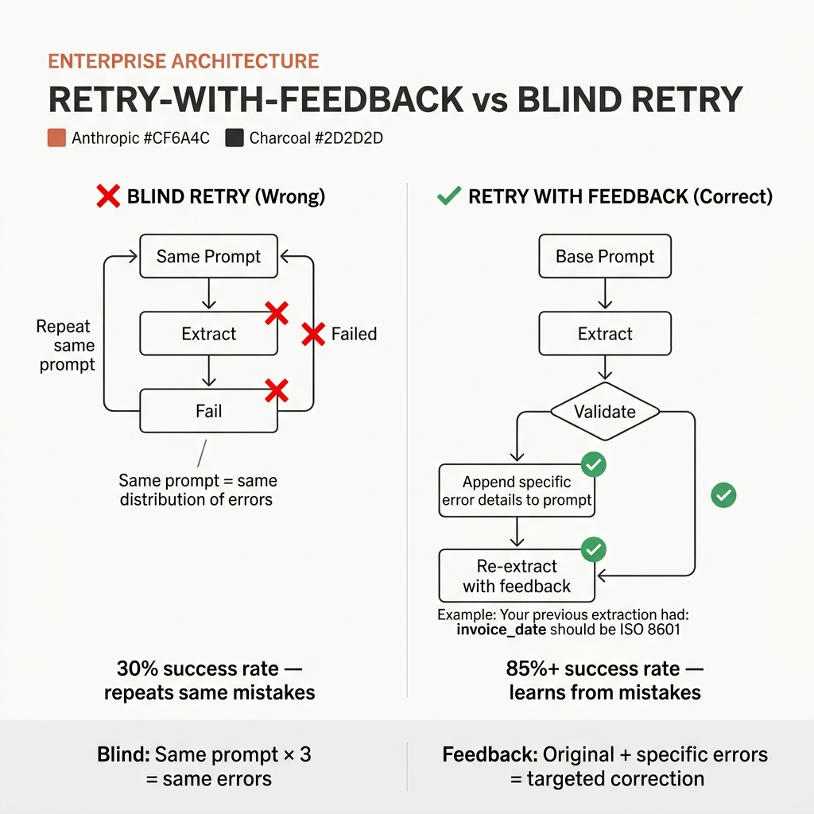
Python — Blind Retry vs Retry-With-Feedback
# ❌ WRONG — blind retry: same prompt = same distribution of errors
for attempt in range(3):
result = extract(document, base_prompt) # no change
# ✅ CORRECT — retry with specific failure context
result = extract(document, base_prompt)
for attempt in range(3):
errors = validate(result)
if not errors:
break
feedback = base_prompt + f"""
Your previous extraction had these specific issues:
{errors}
Please re-extract and correct ONLY these fields.
Correct format for invoice_date: ISO 8601 (YYYY-MM-DD).
"""
result = extract(document, feedback)
Few-Shot vs JSON Schema
Few-shot prompting and JSON Schema serve different purposes in extraction pipelines. Understanding when each applies is directly tested on the exam.
JSON Schema works best when the extraction rule can be expressed as a type constraint. If a field should always be an ISO 8601 date string, a Schema can enforce that. If a status field must be one of three specific values, an enum constraint handles it. Schema-based validation is deterministic, maintainable, and doesn't consume tokens.
Few-shot examples work best when the "correct" extraction depends on context, convention, or domain knowledge that is hard to express as a rule. Payment terms like "net 30", "2/10 n30", or "due on receipt" are all valid but formatted differently — a few examples showing the canonical output format teaches the model the pattern far more reliably than a regex or type constraint.
| ✅ Use Few-Shot For | 📋 Use JSON Schema For |
|---|---|
| Informal/non-standard formats ("2 dozen", "a handful") | Well-defined types (invoice_number, amounts) |
| Domain jargon with no standard format | Boolean flags, enum fields with fixed values |
| Culturally variable date formats | Numeric fields with known constraints |
| Ambiguous classification decisions | Required fields where format is unambiguous |
Domain 5: Context Management & Reliability
Lost-in-the-middle effect, progressive summarization pitfalls, tool output trimming, long-document strategies.
The Lost-in-the-Middle Effect
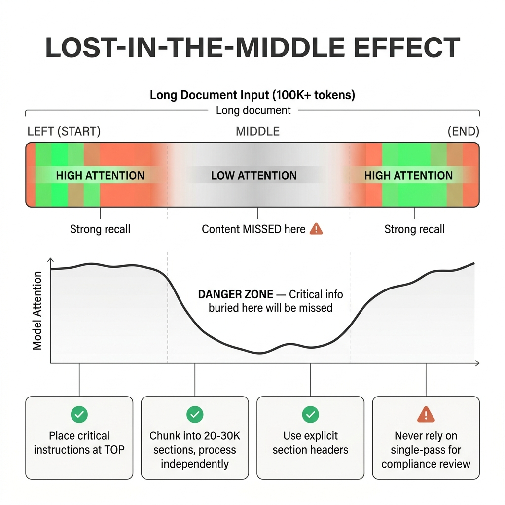
Imagine reading a 400-page document where you know you'll be tested on its contents. You will naturally pay close attention to the introduction and the conclusion. The middle chapters — especially if they cover similar-sounding topics — will blur together. Language models exhibit exactly this behavior, and it is structural, not something you can fix by asking the model to "pay close attention."
LLMs reliably process content at the beginning and end of long inputs, but miss content buried in the middle. This is an architectural constraint — not a prompt engineering problem to solve with better wording.
Mitigation Strategies
- Place critical instructions and criteria at the TOP of the input
- For long documents: chunk into ~20–30K token sections, process independently, aggregate
- Use explicit section headers to anchor attention in long inputs
- Place key summaries at the top of aggregated multi-agent outputs
Progressive Summarization — Numeric Precision Loss
| Original Exact Value | After Summarization (WRONG) |
|---|---|
| "42.3% improvement in throughput" | "about a 40% improvement" |
| "18 days to resolve" | "several weeks to resolve" |
| "$2,847.50 refund processed" | "a refund was processed" |
Tool Output Context Trimming
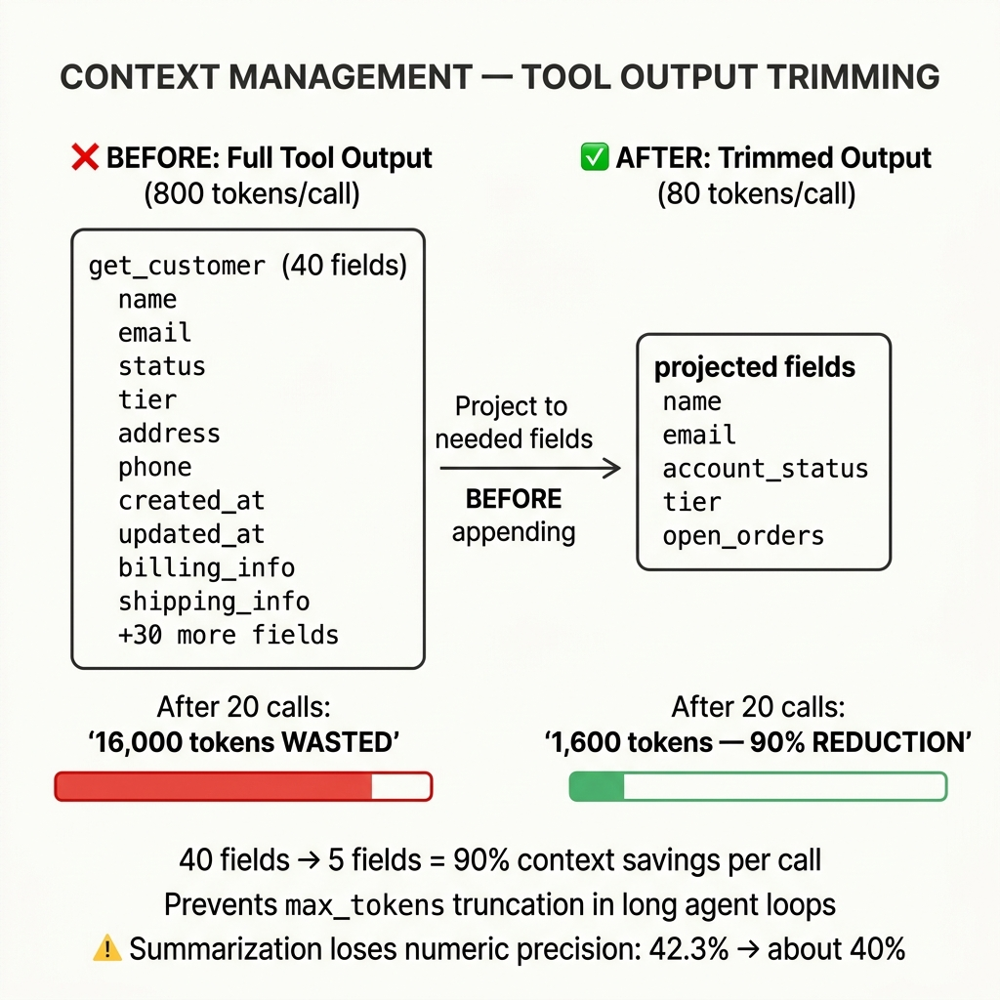
Python — 90% Context Reduction
# ❌ WRONG — full 40-field object: ~800 tokens per call
result = call_tool("get_customer", {"id": 123})
messages.append(tool_result(result)) # 800 tokens wasted
# ✅ CORRECT — project to needed fields: ~80 tokens (90% reduction)
result = call_tool("get_customer", {"id": 123})
needed = {k: result[k] for k in
["name", "email", "account_status", "tier", "open_orders"]}
messages.append(tool_result(needed))
Prompt Injection & Input Guardrails
In agentic systems, user inputs and retrieved content (from tools, RAG, file uploads) can contain malicious instructions that attempt to override the system prompt. The exam tests your ability to design architecturally secure systems — not just "tell the model to be careful."
| Defense Layer | Implementation | What It Prevents |
|---|---|---|
| input_validation | PreToolUse hooks validate all tool parameters against schemas | Malicious parameters injected via user input |
| context_isolation | Subagents receive ONLY their needed context, not full conversation | Injected instructions propagating across agents |
| output_parsing | Schema-based parsing (JSON Schema), never regex on model text | Model outputting injected content as "data" |
| content_boundary | Treat ALL retrieved content (RAG, uploads, tool results) as untrusted | Documents containing hidden prompt override instructions |
Observability & Logging
Production agent systems must be observable independently of the model. The exam tests whether you understand that you cannot rely on the model to accurately report its own failures — you need external instrumentation.
| What to Log | How | Why |
|---|---|---|
| tool_calls | Wrapper/decorator on tool handlers | Track input, output, latency, error status per call |
| token_usage | Read response.usage after each API call | Monitor context growth, detect budget overruns |
| stop_reason | Log on every loop iteration | Detect unexpected max_tokens truncation early |
| errors | Surface ALL errors to coordinator — structured format | Silent failures are the #1 production anti-pattern |
Section 7: All 6 Exam Scenarios
The exam randomly selects 4. Scenarios 1 and 3 appear most frequently. Master those two first, then the rest.
The exam randomly selects 4 of these 6 scenarios at the start of your test. Every question you see will be anchored to one of those 4 scenarios. You don't know in advance which 4 will be selected, so you need to be comfortable with all 6 — but based on candidate reports, Scenarios 1 and 3 appear in almost every exam sitting.
For each scenario, study three things: what the architecture looks like (so you can recognize it in a question), what the common traps are (the wrong answers are engineered around these), and what the key principle is (the one insight that makes the correct answer obvious once you see it).
Section 8: Quick Reference Cheat Sheet
Most frequently tested terminology and patterns. Print this for final review the night before your exam.
This is your last-read-before-exam reference. Every cell in these tables is a term, value, or rule that appears directly in exam questions. The left column of each table is what the exam will name — the right column is what you need to know about it.
Print this page or keep it open in a separate tab. On exam day, you will not have access to reference material — but 20 minutes reviewing this the night before significantly sharpens recall on the precise terminology questions that trip people up.
Section 9: Practice Questions
35 scenario-grounded questions with full explanations. Click to expand, select, then check your answer.
These questions mirror the format, difficulty, and distractor style of the real exam. Each wrong answer is designed to look correct if you understand the concept loosely — the same way the real exam works. When you get a question wrong, read the explanation carefully: the principle at the bottom of each explanation is the mental model you need to lock in.
Work through all 35 before checking your score. Then filter by domain to identify which areas need more review before your exam day.
Section 10: 2-Week Study Plan
Hands-on building takes priority over passive reading. The exam rewards production experience.
This plan is structured around a core principle: building beats reading. The exam tests whether you can make correct architectural decisions under time pressure — and that judgment only develops through actually building systems, hitting the failure modes, and understanding why certain patterns exist.
Week 1 builds your foundation through hands-on work. Week 2 closes the gap between knowledge and exam-ready judgment through scenario practice and the official test. Each day has a specific deliverable — not just "read about X" but "build X and observe Y."
Section 11: Official Resources & Links
All authoritative sources. The official 60-question practice test (after registration) is the single most important resource.
The resources below are ordered by exam relevance. The official 60-question practice test (available after you register) is the single most important resource — it is the only simulation of the real exam format, difficulty, and distractor style. Everything else in this guide prepares you for that test.
The Anthropic Academy courses are authoritative because the exam is built directly from them. When exam questions use specific terminology, it matches the terminology in these courses exactly. If you have time to do only 3 courses, do: Introduction to Subagents, MCP Advanced Topics, and Claude Code Configuration.
Registration
| Exam Access Request | anthropic.skilljar.com/claude-certified-architect-foundations-access-request |
| Anthropic Academy (13 free courses) | anthropic.skilljar.com |
Claude Agent SDK
Claude API
| Messages API | platform.claude.com/docs/en/api/messages |
| Tool Use | platform.claude.com/docs/en/build-with-claude/tool-use |
| Prompt Engineering | platform.claude.com/docs/en/build-with-claude/prompt-engineering/overview |
Claude Code
| Overview | code.claude.com/docs/en/overview |
| CLAUDE.md & Memory | code.claude.com/docs/en/memory |
| Agent Skills (slash commands) | code.claude.com/docs/en/skills |
| Hooks | code.claude.com/docs/en/hooks |
| GitHub Actions CI/CD | code.claude.com/docs/en/github-actions |
| Headless Mode | code.claude.com/docs/en/headless |
Model Context Protocol
| MCP Overview | modelcontextprotocol.io |
| Tools | modelcontextprotocol.io/docs/concepts/tools |
| Resources | modelcontextprotocol.io/docs/concepts/resources |
Practice Exams & Community
| Tutorials Dojo CCA-F Practice | tutorialsdojo.com — search "CCA-F" |
| Udemy: Jon Bonso CCA-F Exams | udemy.com — search "Claude Certified Architect" |
| Community Study Guide (GitHub) | github.com/paullarionov/claude-certified-architect |
| Anthropic Cookbook | github.com/anthropics/anthropic-cookbook |
Extended Thinking
How Claude reasons step-by-step before responding — when to use it, how it interacts with tool use, and cost tradeoffs.
What Is Extended Thinking?
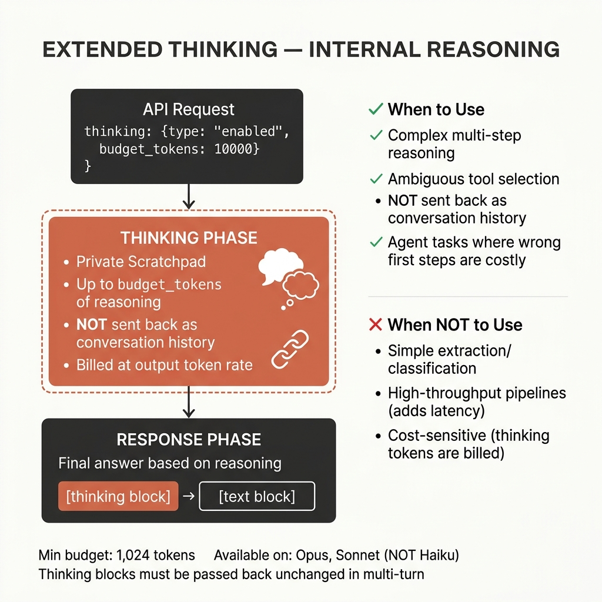
Extended thinking gives Claude a private scratchpad to reason through complex problems before producing its final response. The model generates thinking blocks — internal reasoning that is visible to you but not sent back to the model as conversation history.
| Parameter | Description | Typical Value |
|---|---|---|
| thinking.type | Enable extended thinking | "enabled" |
| budget_tokens | Max tokens for internal reasoning | 5,000–16,000 |
| min budget | Minimum that activates thinking | 1,024 tokens |
| billed tokens | Thinking tokens ARE billed | Same rate as output |
Python — Extended Thinking
response = client.messages.create(
model="claude-opus-4-5",
max_tokens=16000,
thinking={
"type": "enabled",
"budget_tokens": 10000 # Claude can use up to 10K tokens to think
},
messages=[{"role": "user", "content": prompt}]
)
# Response contains BOTH thinking blocks AND text blocks
for block in response.content:
if block.type == "thinking":
print("Reasoning:", block.thinking) # internal scratchpad
elif block.type == "text":
print("Answer:", block.text) # final response
Extended Thinking + Tool Use
When extended thinking is enabled alongside tools, the model thinks before deciding which tool to call. This significantly improves tool selection accuracy for complex multi-step tasks.
thinking_delta events, followed by text_delta events for the final response. Use
the official SDKs to handle content_block_start, thinking_delta, and
content_block_stop events.When to Use Extended Thinking
| Use Extended Thinking | Do NOT Use Extended Thinking |
|---|---|
| Complex multi-step reasoning (math, logic, planning) | Simple extraction or classification tasks |
| Ambiguous tool selection with many similar tools | High-throughput pipelines where latency matters |
| Agent tasks where wrong first steps are costly | Simple lookups where latency budget is under 500ms |
| Code generation with complex requirements | Cost-sensitive pipelines (thinking tokens are billed) |
budget_tokens must be at least 1,024 or thinking will not activate. Newer models (Opus 4.6+,
Sonnet 4.6+) also support adaptive thinking (thinking: {type: "adaptive"}) which
automatically adjusts the thinking budget — this is the recommended approach for new projects.Model Selection & Tiers
When to use Opus, Sonnet, or Haiku in agent architectures. Cost vs. capability tradeoffs tested directly on the exam.
The Claude Model Tiers
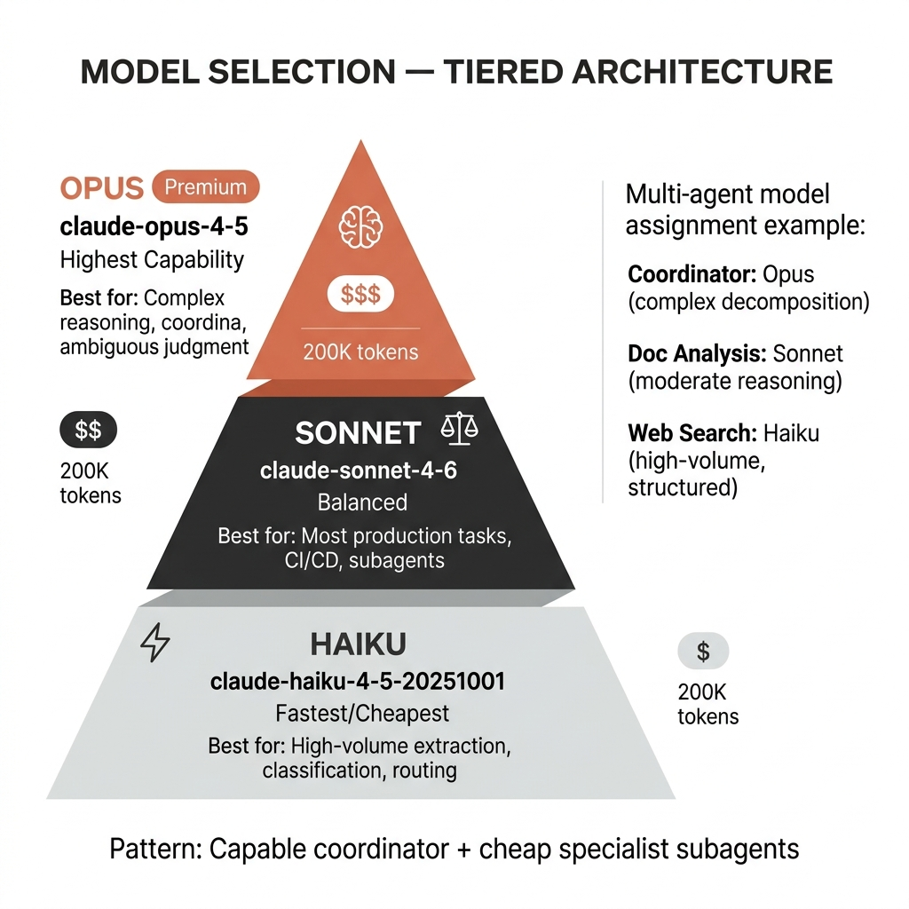
| Model | Tier | Best For | Avoid When |
|---|---|---|---|
| claude-opus-4-x | Highest capability | Complex reasoning, orchestration coordinator, ambiguous tasks requiring judgment | High-volume pipelines, cost-sensitive workflows, simple extraction |
| claude-sonnet-4-x | Balanced | Most production tasks — good capability at reasonable cost, CI/CD pipelines, subagents | Tasks requiring maximum reasoning depth or absolute lowest cost |
| claude-haiku-4-x | Fastest/cheapest | High-volume extraction, simple classification, routing tasks, real-time chat | Complex reasoning, multi-step planning, extended thinking (not supported) |
Model Selection in Multi-Agent Systems
The exam tests a specific pattern: use a capable model for the coordinator and cheaper models for specialist subagents doing well-defined tasks.
Python — Tiered Model Strategy
# Coordinator: Opus for complex task decomposition and judgment
coordinator = Agent(
model="claude-opus-4-5",
system="You are the research coordinator..."
)
# Subagents: Sonnet/Haiku for well-defined specialist tasks
web_search_agent = Agent(
model="claude-haiku-4-5-20251001", # fast + cheap for structured search
system="Search the web and return structured results..."
)
doc_analysis_agent = Agent(
model="claude-sonnet-4-6", # balanced for analysis tasks
system="Analyze documents and extract key findings..."
)
Model Strings (Memorize These)
| Model String | Family | Context Window |
|---|---|---|
| claude-opus-4-5 | Claude 4 Opus | 200K tokens |
| claude-sonnet-4-6 | Claude 4 Sonnet (latest) | 200K tokens |
| claude-haiku-4-5-20251001 | Claude 4 Haiku | 200K tokens |
Streaming & Batch API
Streaming for real-time responses, Batch API for high-volume async processing. Both appear in exam scenarios.
Streaming Responses
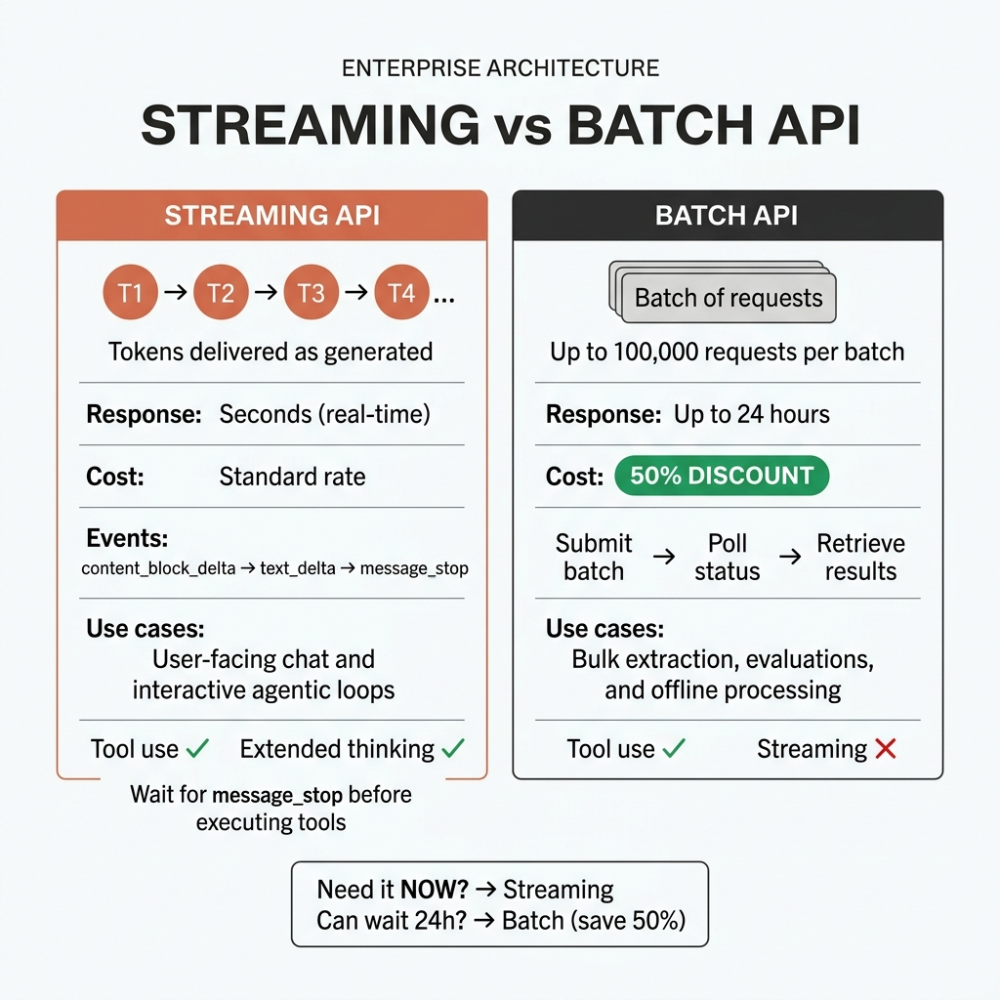
Streaming returns tokens as they are generated instead of waiting for the complete response. Critical for real-time user-facing applications.
Python — Streaming with Tool Use
with client.messages.stream(
model="claude-sonnet-4-6",
max_tokens=1024,
messages=messages,
tools=tools
) as stream:
for event in stream:
if event.type == "content_block_delta":
if event.delta.type == "text_delta":
print(event.delta.text, end="", flush=True)
elif event.type == "message_stop":
final = stream.get_final_message()
# Check stop_reason on final message — same rules apply
if final.stop_reason == "tool_use":
handle_tool_calls(final)
thinking_delta events. Both can
be used together — the earlier incompatibility was resolved in late 2025.Streaming + Agentic Loops
When streaming in an agentic loop, you must collect the full streamed response before
executing tool calls. You cannot execute tools mid-stream — wait for message_stop, then check
stop_reason.
Batch API
The Batch API processes large volumes of requests asynchronously at 50% lower cost than real-time API calls. Results are returned within 24 hours.
| Feature | Real-time API | Batch API |
|---|---|---|
| response_time | Seconds | Up to 24 hours |
| cost | Standard rate | 50% discount |
| max_requests | Rate limited | Up to 100,000 per batch |
| use_case | Real-time, interactive | Bulk extraction, evaluation, offline processing |
| streaming | Supported | Not supported |
| tool_use | Supported | Supported |
Python — Batch API
# Create a batch of requests
batch = client.messages.batches.create(
requests=[
{
"custom_id": "invoice-001",
"params": {
"model": "claude-haiku-4-5-20251001",
"max_tokens": 1024,
"messages": [{"role": "user", "content": invoice_text}]
}
}
for invoice_text in invoices # process thousands at 50% cost
]
)
# Poll for results
while batch.processing_status == "in_progress":
time.sleep(60)
batch = client.messages.batches.retrieve(batch.id)
Prompt Caching
Cache static portions of prompts to reduce costs and latency. Critical for agent systems with large system prompts or repeated tool definitions.
How Prompt Caching Works
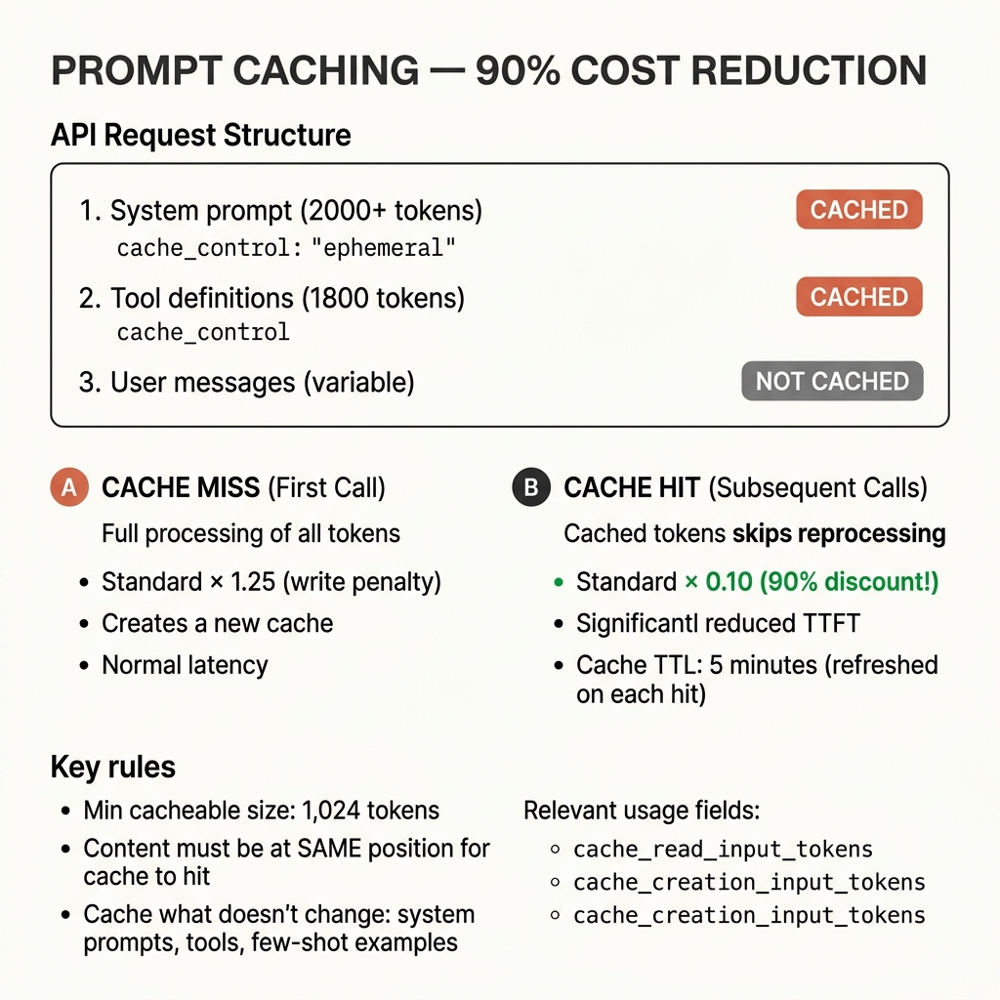
Prompt caching allows you to mark static content with cache_control so Claude can reuse the KV
cache from a previous request instead of reprocessing the same tokens. This reduces both cost and
time-to-first-token.
| Metric | Cache Miss (first call) | Cache Hit (subsequent calls) |
|---|---|---|
| input_cost | Standard rate × 1.25 | Standard rate × 0.10 (90% discount) |
| latency | Normal processing time | Significantly reduced TTFT |
| cache_duration | — | 5 minutes (TTL, refreshed on hit) |
| min_cacheable_tokens | 1,024 tokens minimum | — |
Python — Prompt Caching
response = client.messages.create(
model="claude-sonnet-4-6",
max_tokens=1024,
system=[
{
"type": "text",
"text": large_system_prompt, # 2000+ tokens of static instructions
"cache_control": {"type": "ephemeral"} # ← mark for caching
}
],
tools=tools, # tool definitions are also good cache candidates
messages=messages
)
# Check cache usage in response
usage = response.usage
print(f"Cache read: {usage.cache_read_input_tokens}") # 90% cheaper
print(f"Cache write: {usage.cache_creation_input_tokens}") # 25% more expensive
What to Cache
- Large system prompts — instructions, personas, domain context that don't change per request
- Tool definitions — especially when you have many tools with long descriptions
- Few-shot examples — static examples that appear in every request
- Long reference documents — codebases, knowledge bases passed as context
cache_control must appear at the SAME position in the
prompt on every request for the cache to hit. If the cached content shifts position (e.g., a dynamic prefix is
added before it), the cache will miss.Error Handling & Rate Limits
HTTP error codes, exponential backoff, rate limit handling, and token budget management in production agent systems.
API Error Codes
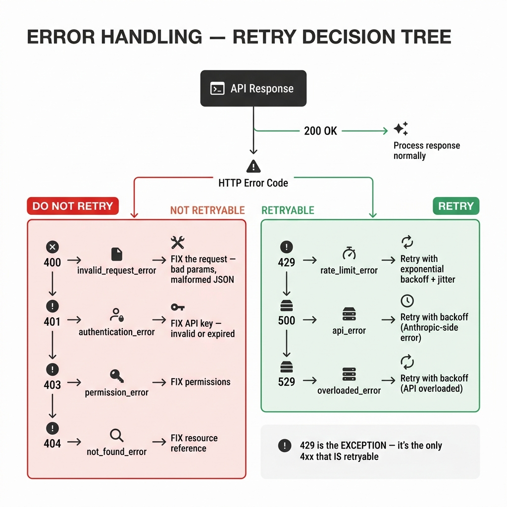
| HTTP Code | Error Type | Action |
|---|---|---|
| 400 | invalid_request_error | Fix the request — do NOT retry. Bad params, invalid model, malformed JSON. |
| 401 | authentication_error | Fix API key — do NOT retry. Invalid or expired key. |
| 403 | permission_error | Fix permissions — do NOT retry. Accessing unavailable resource. |
| 404 | not_found_error | Fix resource reference — do NOT retry. |
| 429 | rate_limit_error | Retry with exponential backoff. You've hit requests-per-minute or tokens-per-minute limit. |
| 500 | api_error | Retry with backoff. Anthropic-side error. |
| 529 | overloaded_error | Retry with backoff. API temporarily overloaded. |
Exponential Backoff Pattern
Python — Exponential Backoff
import time, random
def call_with_backoff(messages, max_retries=5):
for attempt in range(max_retries):
try:
return client.messages.create(
model="claude-sonnet-4-6",
max_tokens=1024,
messages=messages
)
except anthropic.RateLimitError:
if attempt == max_retries - 1:
raise
wait = (2 ** attempt) + random.uniform(0, 1) # jitter
time.sleep(wait)
except anthropic.BadRequestError:
raise # 400 — don't retry, fix the request
Token Budget Management
Production agent systems must proactively manage context to avoid max_tokens truncation
mid-task.
Python — Proactive Token Counting
# Count tokens BEFORE making the API call
token_count = client.messages.count_tokens(
model="claude-sonnet-4-6",
system=system_prompt,
tools=tools,
messages=messages
)
if token_count.input_tokens > 180_000: # leave 20K buffer
messages = trim_oldest_tool_results(messages)
# or: summarize old turns, or: start a new context
response = client.messages.create(
model="claude-sonnet-4-6",
max_tokens=4096,
messages=messages
)
Rate Limits — Types
| Limit Type | What It Counts | Mitigation |
|---|---|---|
| RPM | Requests per minute | Backoff, batch API, request queuing |
| TPM | Input + output tokens per minute | Reduce max_tokens, use Haiku for high-volume tasks |
| TPD | Tokens per day | Upgrade tier, use Batch API for non-urgent work |
Computer Use
Claude's ability to interact with GUIs — clicks, typing, screenshots. Low exam weight but appears in agent architecture questions.
What Is Computer Use?
Diagram uses the same agentic loop pattern — stop_reason drives GUI interaction in a sandboxed environment
Computer use allows Claude to interact with a computer's GUI — taking screenshots, moving the cursor, clicking, and typing — to complete tasks that require visual interaction with desktop applications or websites.
| Built-in Tool | Action |
|---|---|
| computer | Take screenshots, move mouse, click, type, scroll |
| text_editor | Read, write, and edit files by path |
| bash | Execute shell commands |
Python — Enabling Computer Use
response = client.messages.create(
model="claude-sonnet-4-6",
max_tokens=4096,
tools=[
{
"type": "computer_20250124",
"name": "computer",
"display_width_px": 1024,
"display_height_px": 768,
},
{"type": "text_editor_20250124", "name": "str_replace_based_edit_tool"},
{"type": "bash_20250124", "name": "bash"},
],
messages=messages
)
Key Exam Facts About Computer Use
- Computer use tools are beta — enabled via an
anthropic-betaheader - The agentic loop mechanics are identical —
stop_reason = "tool_use"drives the loop exactly the same way - Screenshots are passed back as image content blocks in the tool_result
- Best model: Sonnet for computer use tasks (best speed/accuracy tradeoff)
- Computer use requires a sandboxed environment — never run on a production machine